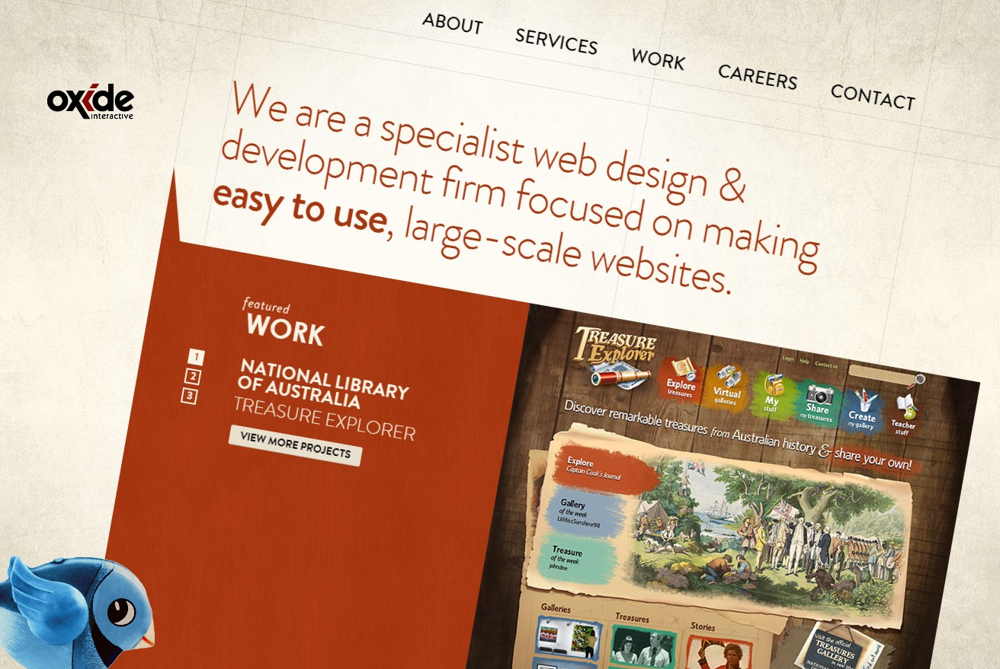
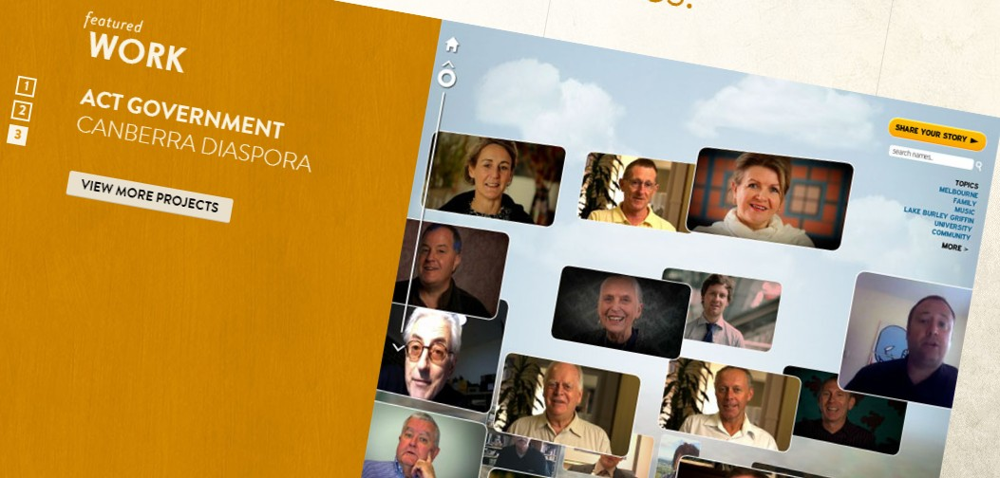
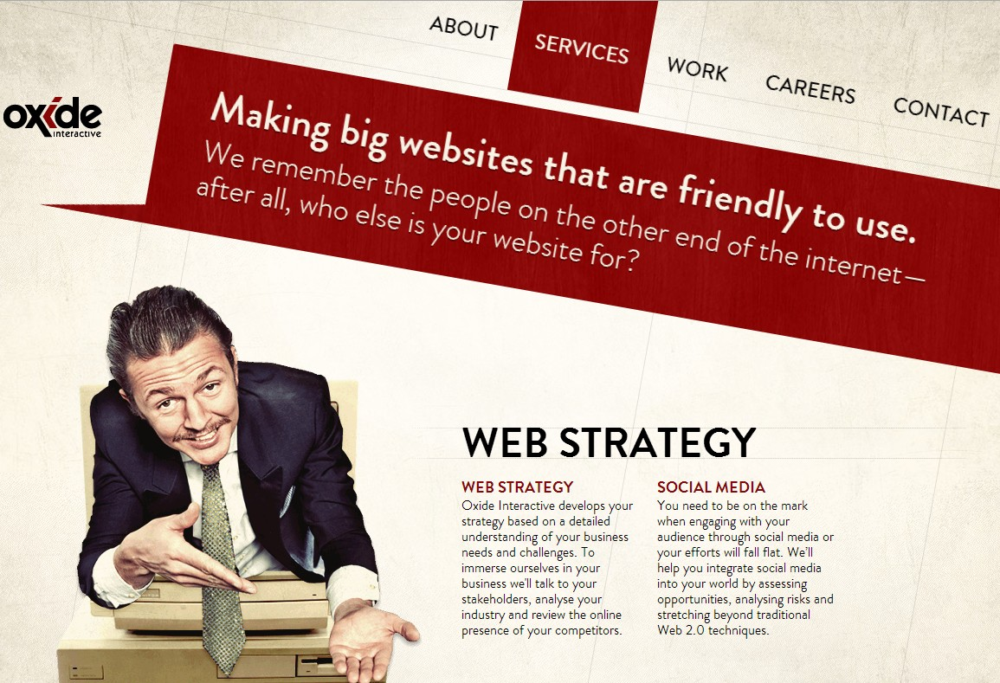
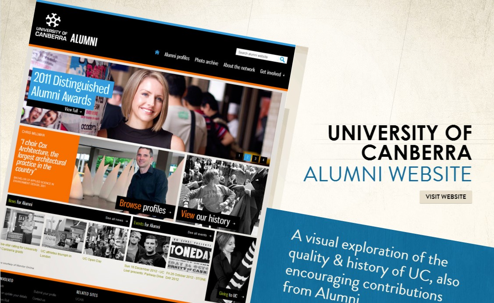
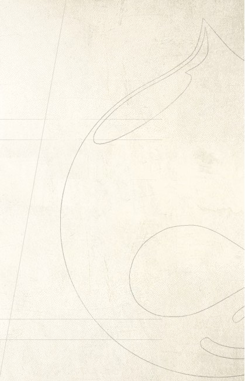
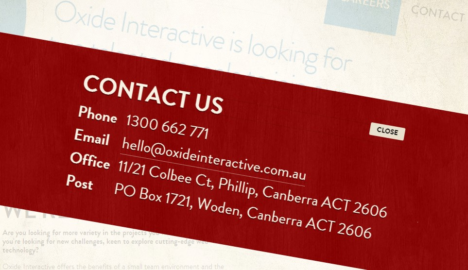
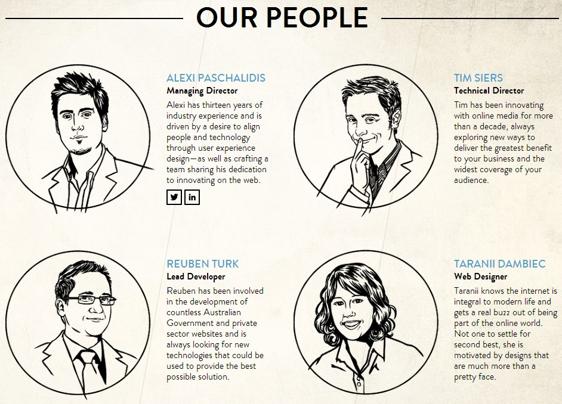
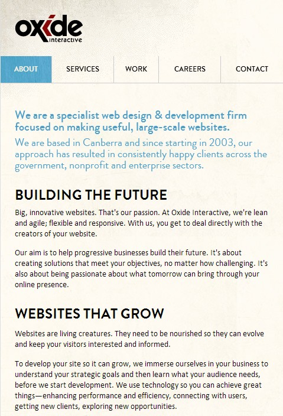

今天又不介紹技術，再來分享一個網站。
網址：http://www.oxideinteractive.com.au/
這是澳洲的網頁設計公司，而這網站很容易讓人記住，因為它是斜的(角度: 10deg)，雖然斜，但在視覺上很協調，這樣的排版讓人感覺很像平面設計。
以前受限於CSS語法，所以如果要做這樣的效果都要做成圖片，現在有了CSS3，可以讓這樣子的編排呈現在瀏覽器上。
連slider效果都是斜的。
傾斜與水平的編排。
產品的介紹葉面也是斜的
藏在背景裡的Drupal
點contact us就會出現向封條一樣的色塊蓋在畫面上。
工作人員也用很復古的風格繪製。
這網頁是有做自適應，在手機版就是正常的編排。
透過CSS可以將網站如預期的排版，而追求新的技術可以增加效果的多變性。但美麗的效果，不一定是複雜的技術。